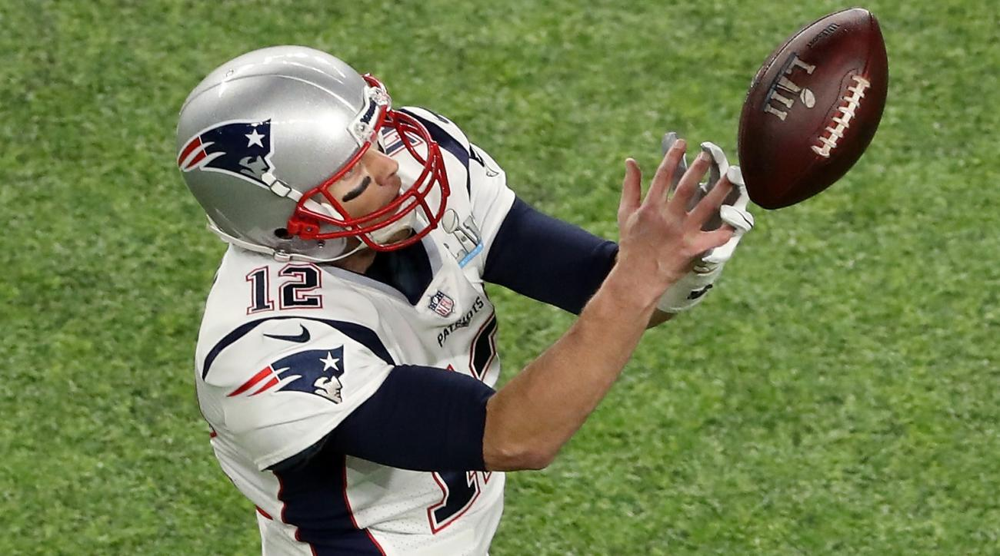

The New England Patriots won the opening coin toss and elected to defer to the second half. The Patriots kicked to the Eagles who opened with a long time consuming drive of 7:05 and resulted in a 25-yard Jake Elliott field goal, giving the Eagles a 3–0 lead. The drive was controlled by the arm of Eagles quarterback Nick Foles, who went 6-for-9 for 61 yards and completed passes to five different receivers, with a few short runs by LeGarrette Blount and Jay Ajayi littered in. Foles also made two critical completions on third down plays, hitting Alshon Jeffery for a 17-yard gain on 3rd and 4, and later finding Torrey Smith for 15 yards on third and 12. The Patriots responded with a drive of their own, almost with the exact same results; quarterback Tom Brady going 6-for-8 for 60 yards to four different receivers, the longest a 28-yard pass to Chris Hogan. The drive stalled out on the Eagles 8-yard line, where they had to settle for Stephen Gostkowski's 26-yard field goal, tying the game at 3–3. The game's first touchdown was scored by the Eagles on the next drive, taking only three plays: a short pass from Foles to Nelson Agholor, a 36-yard run up the middle by Blount, and a 34-yard touchdown pass from Foles to Jeffery to the left side of the field. The ensuing extra point missed as it was wide left, however, leaving the score at 9–3. On the next Patriots drive, they took the ball to the Philadelphia 11 yard line, mainly on the strength of a 50-yard completion from Brady to Danny Amendola, where the quarter ended.
Second Half
The Patriots received the second-half kickoff and Brady led New England 75 yards in 8 plays. Gronkowski, who only caught 1 pass for 9 yards in the first half, caught 5 passes for 68 yards on the drive, the last a 5-yard touchdown reception to make the score 22-19. The Eagles responded by moving the ball 85 yards in 11 plays on a drive that consumed less than 5 minutes and featured 3 critical 3rd down conversions by Foles. The first was a 17-yard pass to Agholor on 3rd and 6 from the Eagles 19-yard line. Later in the drive, he thew a 14-yard completion to Ertz on 3rd and 1 from the New England 40. Finally, he finished the possession with a 22-yard touchdown pass to Clement on 3rd and 6. The touchdown was held up by a replay review, but replay officials confirmed that Clement kept both feet inbounds and controlled the ball. An Elliott extra point brought the score to 29–19 in favor of the Eagles. Brady responded with a 10-play, 75-yard drive, completing all three of his passes for 61 yards, the last one a 26-yard touchdown pass to Hogan that brought the score to 29–26. The Eagles followed with an 8-play, 51-yard drive featuring a 24-yard completion from Foles to Agholor on the first play. By the end of the third quarter, the team had made it to the New England 16-yard line.
 U.S. Bank Stadium in Minneapolis, Minnesota. Minneapolis hosted Super Bowl XXVI in 1992 at the Hubert H. Humphrey Metrodome, which was torn down after the 2013 season and replaced in 2014 and 2015 by U.S. Bank Stadium.
U.S. Bank Stadium in Minneapolis, Minnesota. Minneapolis hosted Super Bowl XXVI in 1992 at the Hubert H. Humphrey Metrodome, which was torn down after the 2013 season and replaced in 2014 and 2015 by U.S. Bank Stadium.